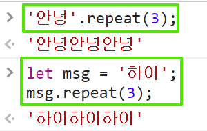

drawsStars() ~ drawsStars5()까지의
모든 함수들은 lines라는 매개변수를 갖는다. 예를
들어 drawsStars(5); 를 호출하면 특정 규칙에 따라
5줄의 별이 그려진다.
(힌트) 함수마다 각 반복 회차별로
'*' 문자와 ' ' 문자(공백 문자)의 규칙성을
찾아보세요!
(힌트) 문자열에서 사용 가능한 함수(메서드)는
repeat(n)은 문자열을 n회 반복한 새로운 문자열을
반환합니다. (여기서 n은 0과 양의 정수입니다. 즉,
repeat(-1) 코드는 인자 값이 음수이므로 error 가
발생해요)
MDN 사이드 이동

drawStars()함수 호출 결과는 다음과 같습니다.drawStars2()함수 호출 결과는
다음과 같습니다.drawStars3()함수 호출 결과는
다음과 같습니다.drawStars4()함수 호출 결과는
다음과 같습니다.
drawStars4()함수의 경우,
lines 매개변수의 값이
3이라면 5줄, 4라면 7줄, 5라면 9줄 ...을
출력합니다.drawStars5()함수 호출 결과는
다음과 같습니다.